Chapter 4 solved DC circuits by writing Kirchhoff's current law (KCL) at nodes or Kirchhoff's voltage law (KVL) around meshes, then solving the system with Cramer's rule. Slide p. 2 says the same procedure works for AC circuits in the steady state right away, because Kirchhoff's laws hold for phasors and every element has a phasor Ohm's law, \(\mathbf{V} = Z\mathbf{I}\); only the numbers are complex. In class the teacher noted that this needs all sources at one frequency (f₁ = f₂). This page has Ex 1–2 (one circuit, solved by nodal and by mesh analysis), all three homework problems, and two extra problems from the 2018 slides.
KCL and KVL hold for phasors (all sources at one frequency) and \(\mathbf{V} = Z\mathbf{I}\), so every step of chapter 4 still works.
Problems that give admittances (siemens, S or mS) convert them with \(Z = 1/Y\): −j25 mS → j40 Ω (inductor), j50 mS → −j20 Ω (capacitor), 40 mS → 25 Ω.
Nodal: write "currents leaving = 0" at every unknown node, get a complex system and solve it with Cramer's rule (multiply and divide in polar form, add and subtract in Cartesian form).
Mesh: a current source on an outer edge fixes that mesh current at once, so Ex 2 needs only one equation. Pick the method with fewer equations.
Check with a phasor diagram: the currents leaving a node, placed head to tail, must close into a polygon (KCL); so must the voltages around a mesh (KVL).
Ex 1 และ Ex 2 (สไลด์หน้า 4–5): วงจรเดียวกัน หา \(v_1\) และ \(v_2\)
Ex 1 and Ex 2 (slides pp. 4–5): one circuit, find \(v_1\) and \(v_2\)
Ex 1 ให้ใช้วิธีโนด Ex 2 ให้ใช้วิธีเมช ค่าในรูปเป็นแอดมิตแตนซ์ หน่วยมิลลิซีเมนส์ (mS) ซึ่งเป็นส่วนกลับของอิมพีแดนซ์ โจทย์ไม่ได้ให้ ω จึงตอบเป็นเฟเซอร์ (Hayt Practice 10.12) ภาพจำลองของแต่ละข้อยังไม่มีจุดวิ่งจนกว่าจะแก้วงจรเสร็จ
Ex 1 asks for nodal analysis, Ex 2 for mesh analysis. The values in the figure are admittances in millisiemens (mS), the reciprocals of impedances. No ω is given, so the answers are phasors (Hayt Practice 10.12). Each simulation shows no moving dots until the circuit is solved.
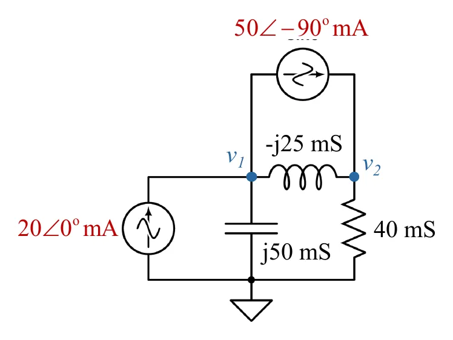
วงจรของ Ex 1–2 (สไลด์หน้า 4) · แตะรูปเพื่อขยายThe circuit of Ex 1–2 (slide p. 4) · tap to enlargeดูสไลด์หน้า 4 ที่ผู้สอนเขียนในห้องSee slide p. 4 as written in class
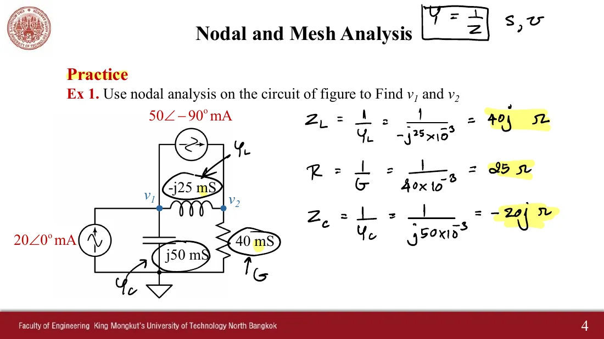
ในห้องแปลงเป็นอิมพีแดนซ์ก่อน: \(Z_L = j40\ \Omega\), \(R = 25\ \Omega\), \(Z_C = -j20\ \Omega\)In class the admittances were turned into impedances first: \(Z_L = j40\ \Omega\), \(R = 25\ \Omega\), \(Z_C = -j20\ \Omega\)
1
Ex 1: ใช้วิธีโนดหา \(v_1\) และ \(v_2\)
Ex 1: find \(v_1\) and \(v_2\) by nodal analysis
สไลด์หน้า 4 · Hayt Practice 10.12 · เฉลยในห้องหน้า 5
Slide p. 4 · Hayt Practice 10.12 · class solution p. 5
ดูเฉลยวิธีโนดที่ผู้สอนเขียนในห้องSee the nodal solution written in class
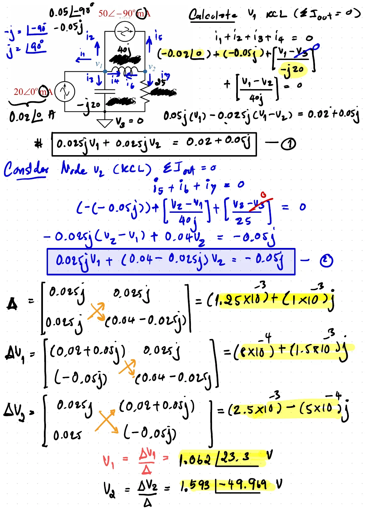
สมการ (1), (2) ดีเทอร์มิแนนต์ และ \(V_1 = 1.062\angle 23.3^\circ\) V, \(V_2 = 1.593\angle{-49.969^\circ}\) VEquations (1), (2), the determinants, and \(V_1 = 1.062\angle 23.3^\circ\) V, \(V_2 = 1.593\angle{-49.969^\circ}\) V
2
Ex 2: ใช้วิธีเมชหา \(v_1\) และ \(v_2\)
Ex 2: find \(v_1\) and \(v_2\) by mesh analysis
สไลด์หน้า 5 · เฉลยในห้องหน้า 7
Slide p. 5 · class solution p. 7
ดูสไลด์หน้า 5 และเฉลยวิธีเมชที่ผู้สอนเขียนในห้องSee slide p. 5 and the mesh solution written in class
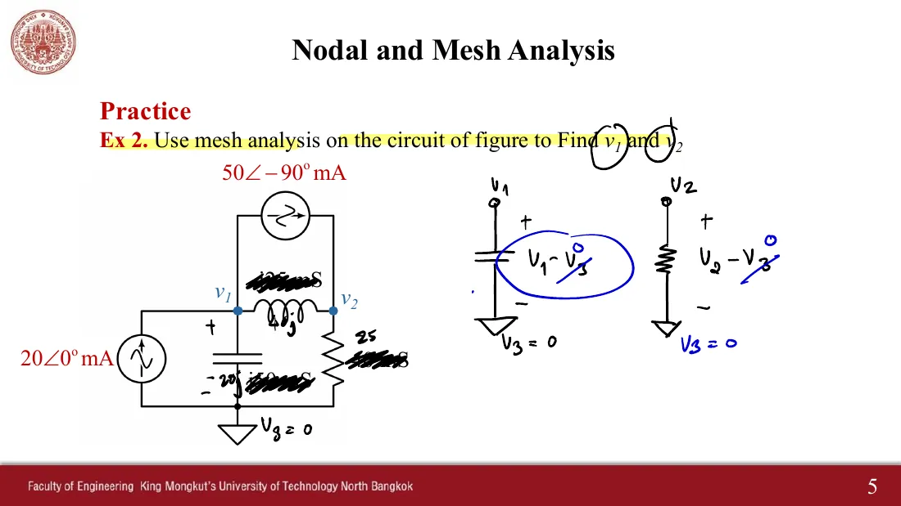
แรงดันโนดวัดเทียบโนดอ้างอิง (\(V_3 = 0\)) และค่าอิมพีแดนซ์บนวงจรThe node voltages against the reference (\(V_3 = 0\)) and the impedances on the circuit
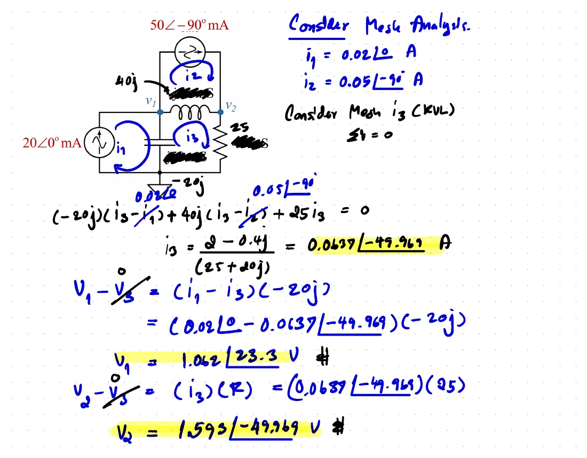
\(i_3 = 0.0637\angle{-49.969^\circ}\) A แล้วได้ \(V_1\), \(V_2\) เท่ากับวิธีโนด\(i_3 = 0.0637\angle{-49.969^\circ}\) A, giving the same \(V_1\), \(V_2\) as nodal analysis
In class the teacher corrected the printed answer of homework 1 and wrote the answer of homework 2. Full solutions of all three are in the 2018 homework solutions file (Sol HW). All three come from Hayt (Problems 10.50, 10.53, 10.55).
Homework 1: find \(\mathbf{I}_1\) and \(\mathbf{I}_2\) with \(\mathbf{V}_1 = 10\angle{-80^\circ}\), \(\mathbf{V}_2 = 4\angle 0^\circ\), \(\mathbf{V}_3 = 2\angle{-23^\circ}\) V
สไลด์หน้า 10 · Hayt Problem 10.50 · เฉลยปี 2561 ใช้วิธีเมช
Slide p. 10 · Hayt Problem 10.50 · the 2018 solution uses meshes
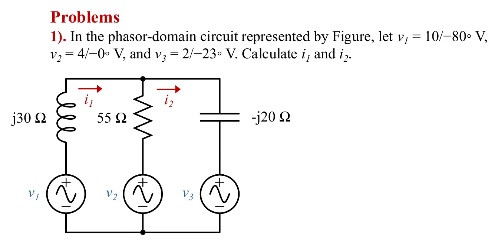
สไลด์หน้า 10 (ตัดคำตอบที่พิมพ์ไว้ออก ดูกล่องเตือน) · แตะรูปเพื่อขยายSlide p. 10 (the printed answers are cut off; see the warning box) · tap to enlarge
The answer printed on the slide is wrong: 0.6247 + j0.3339 = 0.71∠28.12° and 0.4838 + j0.4956 = 0.69∠45.69° (the 2025 handout even labels both lines \(i_1\)) come from Hayt's solution manual, which effectively used \(\mathbf{V}_1 = 10\angle 80^\circ\) and \(\mathbf{V}_3 = 2\angle 23^\circ\) (the minus signs of the angles were lost); putting those positive angles into this circuit gives exactly those numbers. The teacher corrected them in class to 0.61∠−156.595° A and 0.534∠−136.354° A, which is right.
ดูสไลด์หน้า 10 ที่ผู้สอนแก้ในห้อง และเฉลยปี 2561See slide p. 10 as corrected in class, and the 2018 solution
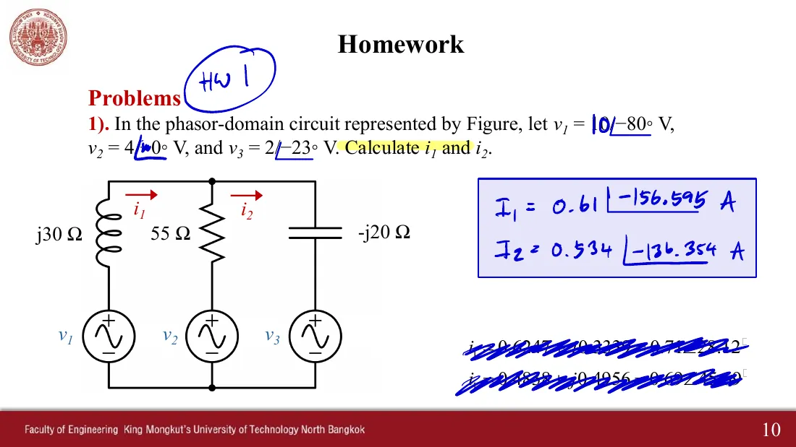
ผู้สอนขีดฆ่าคำตอบที่พิมพ์ไว้ แล้วเขียน \(\mathbf{I}_1 = 0.61\angle{-156.595^\circ}\) A, \(\mathbf{I}_2 = 0.534\angle{-136.354^\circ}\) AThe printed answers crossed out and replaced by \(\mathbf{I}_1 = 0.61\angle{-156.595^\circ}\) A, \(\mathbf{I}_2 = 0.534\angle{-136.354^\circ}\) A
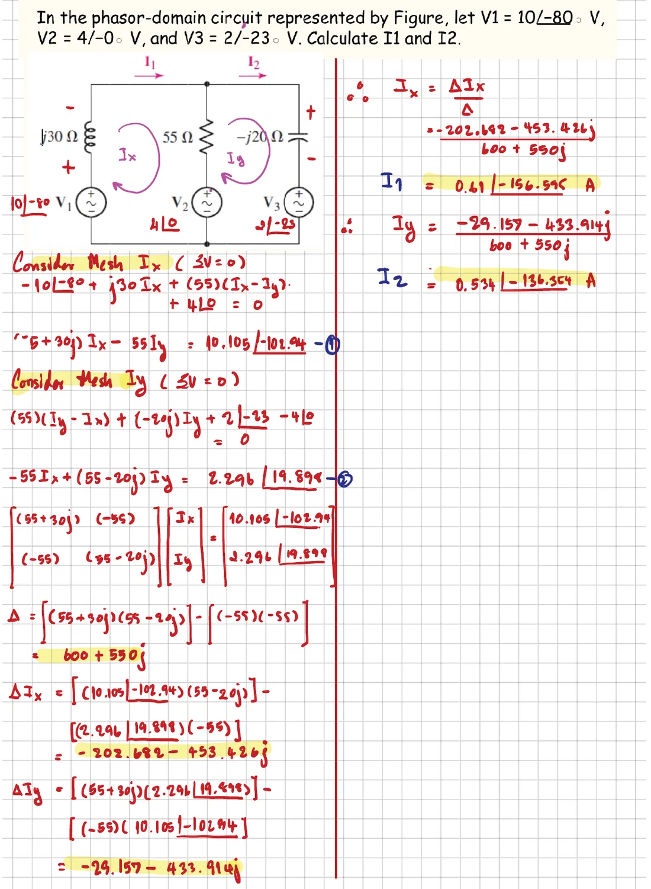
เฉลยปี 2561: \(\Delta = 600 + j550\) แล้วได้คำตอบชุดเดียวกับที่แก้ในห้องThe 2018 solution: \(\Delta = 600 + j550\), giving the same answers as corrected in class
4
การบ้าน 2: หา \(\mathbf{I}_B\) เมื่อ \(\mathbf{I}_1 = 5\angle{-18^\circ}\) A และ \(\mathbf{I}_2 = 2\angle 5^\circ\) A
Homework 2: find \(\mathbf{I}_B\) with \(\mathbf{I}_1 = 5\angle{-18^\circ}\) A and \(\mathbf{I}_2 = 2\angle 5^\circ\) A
สไลด์หน้า 11 · Hayt Problem 10.53 · เฉลยปี 2561 ใช้วิธีเมช
Slide p. 11 · Hayt Problem 10.53 · the 2018 solution uses meshes
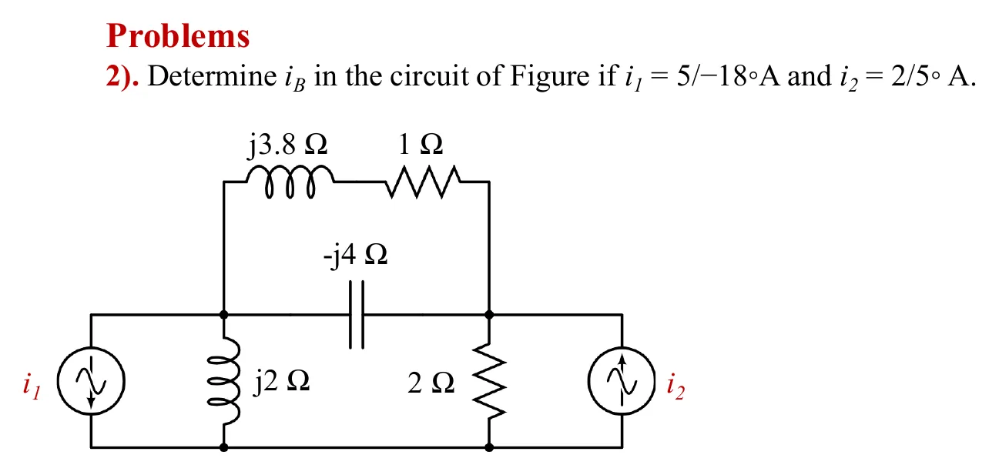
สไลด์หน้า 11 · แตะรูปเพื่อขยายSlide p. 11 · tap to enlarge
ดูคำตอบในห้อง และเฉลยปี 2561See the class answer and the 2018 solution
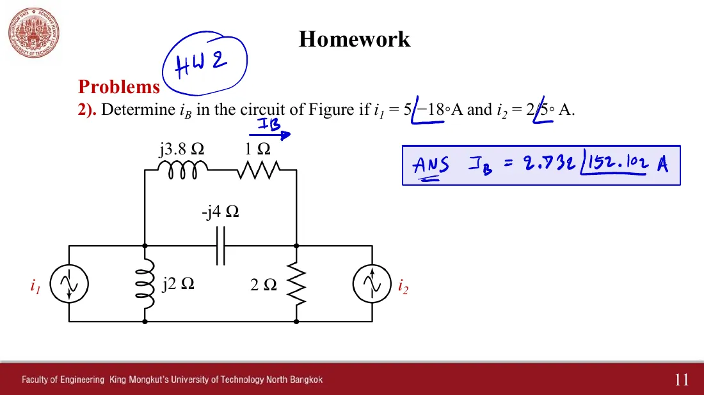
คำตอบในห้อง \(\mathbf{I}_B = 2.732\angle 152.102^\circ\) AThe class answer \(\mathbf{I}_B = 2.732\angle 152.102^\circ\) A
Slide p. 12 · Hayt Problem 10.55 · the 2018 solution uses 3×3 meshes · choose ω under the picture
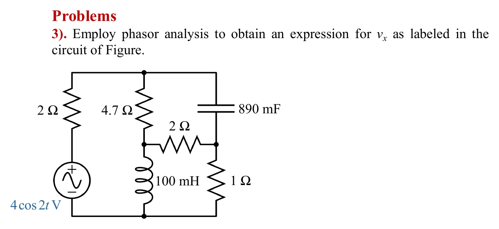
สไลด์หน้า 12 (ฉบับแจกพิมพ์ \(4\cos 2t\) V และไม่มีป้าย \(v_x\)) · แตะรูปเพื่อขยายSlide p. 12 (the handout prints \(4\cos 2t\) V and has no \(v_x\) label) · tap to enlarge
The ω of the problem: the 2025 handout prints the source as \(4\cos 2t\) V, but Hayt Problem 10.55 and the 2018 slides use \(4\cos 20t\) V, and the handout figure has no \(v_x\) label (in Hayt it is the voltage across the 1 Ω, + at the top). The default is therefore ω = 20 rad/s; choose ω = 2 rad/s under the picture. · The 2018 solution sums the Sarrus terms correctly (108.9564 + j91.4784 and 66.27 + j52.404) but subtracts the imaginary parts as 38.0764; the correct value is 39.0744, so it got 1.149∠102.899° instead of 1.136∠102.16°.
ดูสไลด์ปี 2561 และเฉลยปี 2561See the 2018 slide and the 2018 solution
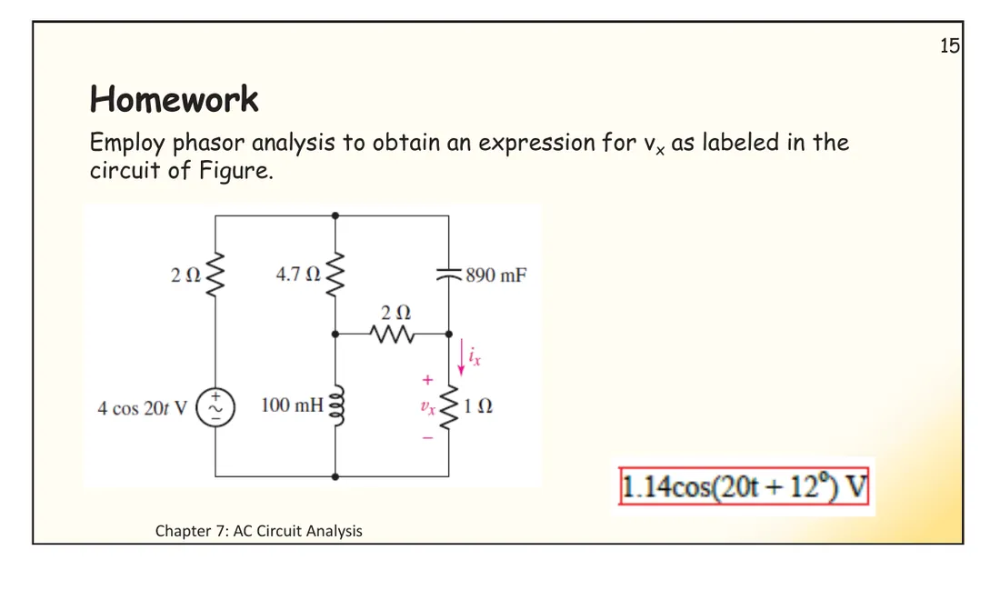
สไลด์ปี 2561 ใช้ \(4\cos 20t\) V มีป้าย \(v_x\) คร่อม 1 Ω และคำตอบของ Hayt \(1.14\cos(20t + 12^\circ)\) VThe 2018 slide uses \(4\cos 20t\) V, labels \(v_x\) across the 1 Ω, and gives Hayt's answer \(1.14\cos(20t + 12^\circ)\) V
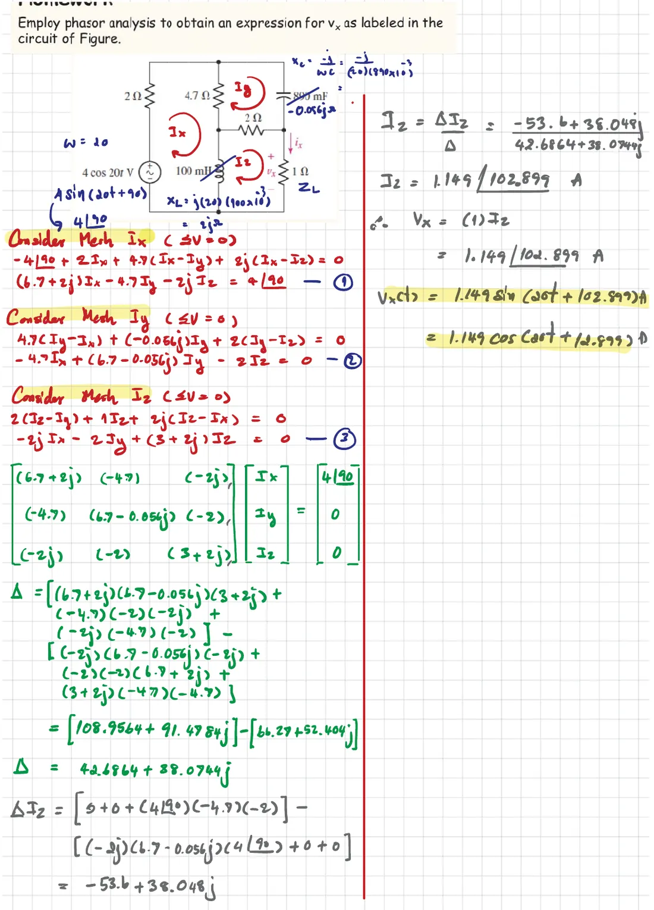
เฉลยปี 2561 (ω = 20): ส่วนจินตภาพของ \(\Delta\) ควรเป็น 39.0744 ไม่ใช่ 38.0764The 2018 solution (ω = 20): the imaginary part of \(\Delta\) should be 39.0744, not 38.0764
The 2018 slides the teacher used hold two more problems that the 2025 handout dropped. The first has a class solution; the second has none, so this page solves it and checks it both ways.